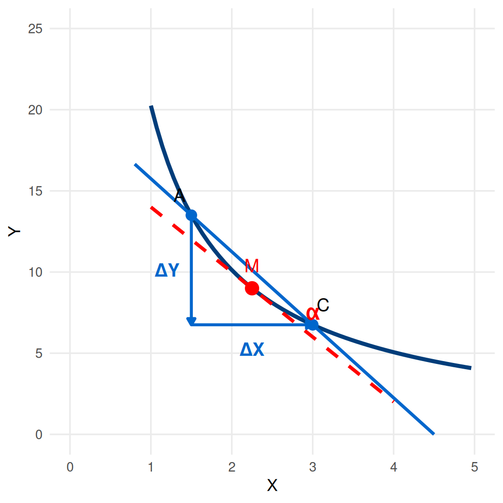
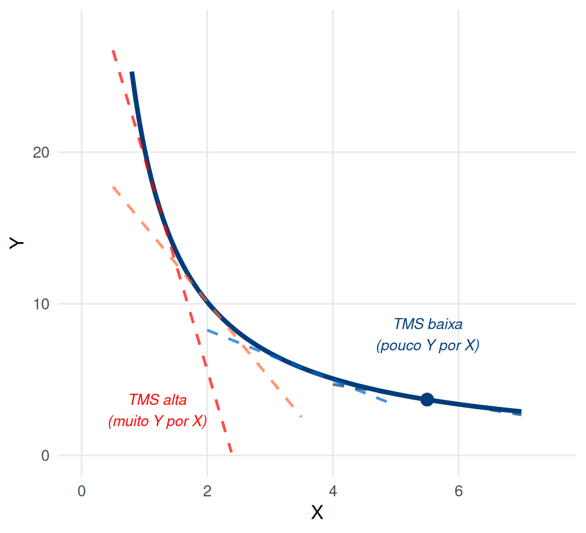
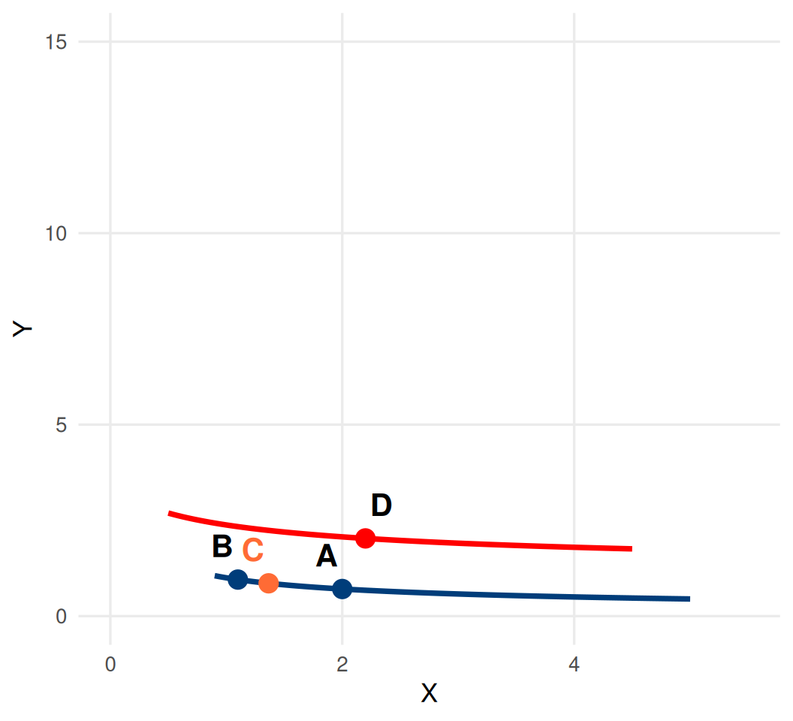
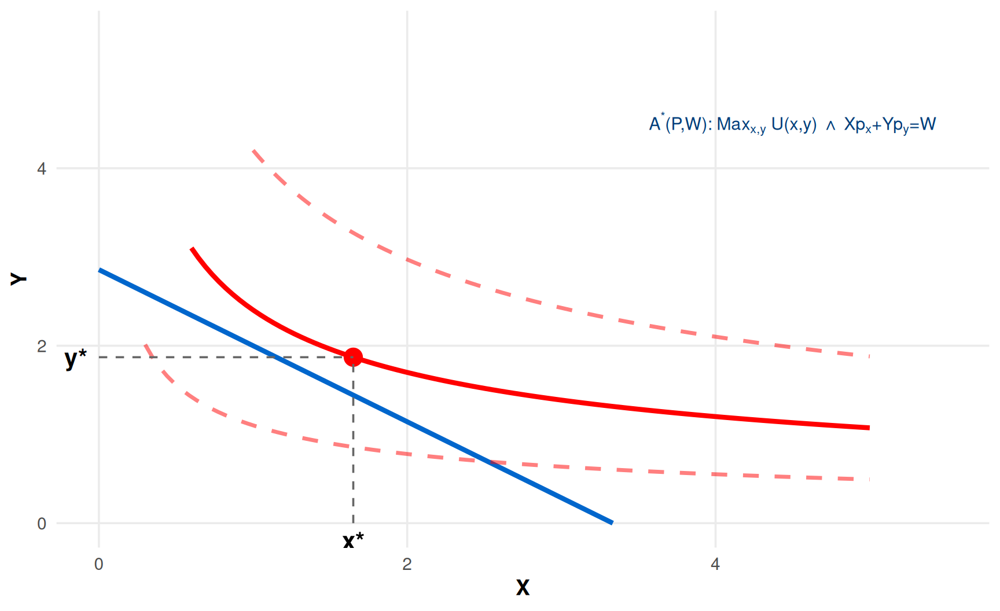

Microeconomia
Aula 7: Taxa Marginal de Substituição e Ótimo de Consumo
ISCAL - IPL
Objetivos da Aula 🎯
Nesta aula iremos estudar:
- Taxa Marginal de Substituição (TMS)
- TMS como declive da curva de indiferença
- Propriedades das curvas de indiferença “bem comportadas”
- Axiomas de racionalidade: completude e transitividade
- Função de utilidade e sua interpretação
- Escolha ótima do consumidor
Taxa Marginal de Substituição (TMS) 🔄
Taxa Marginal de Substituição
É a taxa à qual o consumidor está disposto a trocar um bem pelo outro e ficar indiferente.
Define-se como a quantidade do bem \(Y\) de que está disposto a prescindir, para ter mais uma unidade do bem \(X\) e ficar indiferente
Matematicamente: \(TMS_{X,Y} = -\frac{\Delta Y}{\Delta X}\) ao longo de uma curva de indiferença
É sempre um valor negativo (ou reportamos o valor absoluto)
TMS: Cálculo Numérico 📊

A TMS varia ao longo da curva! É maior (em valor absoluto) quando X é escasso, e menor quando X é abundante.
TMS como Derivada da Curva de Indiferença 📐
\(\frac{\Delta Y}{\Delta X}\) é a taxa de variação média entre A e C
\(\left|\frac{\Delta Y}{\Delta X}\right|\) é a TMS média entre A e C
\(\left|\frac{\Delta Y}{\Delta X}\right| = |\tan \alpha|\)
Quando \(\Delta X \to 0\), obtemos a derivada: \(\frac{dY}{dX}\)
TMS é o declive da curva de indiferença num ponto!
\[TMS = -\frac{dY}{dX}\Big|_{U=\text{const}}\]
TMS Decrescente (em valor absoluto) 📉
Ao longo da curva de indiferença convexa, a TMS é decrescente em valor absoluto:
O consumidor valoriza mais o bem de que dispõe em menor quantidade
Quanto maior a quantidade de um bem, menor o valor que atribui a uma unidade adicional
Aproxima-se do ponto de saciedade, onde consumo adicional deixa de ser desejável

Axiomática de Preferências (resumo) 📋
Desejabilidade → as curvas de indiferença têm inclinação negativa
Completude: dados dois cabazes quaisquer, o consumidor sabe sempre dizer qual a relação de preferências entre eles
- Todos os cabazes pertencem a uma curva de indiferença
- Quanto mais alta a curva, maior a satisfação (desejabilidade)
Transitividade: se A é preferido a B, e B é preferido a C, então A é preferido a C
Mapa de Curvas de Indiferença 🗺️

Transitividade das Preferências 🔄
Se as preferências são transitivas:
- Se A é preferido a B
- E B é preferido a C
- Então A é preferido a C!
Consequência importante:
As curvas de indiferença não se podem cruzar! ❌
Por que as Curvas Não se Podem Cruzar? 🚫

Se as curvas se cruzassem:
\(D \succ A\) (D tem mais de ambos os bens)
Mas \(D \sim C\) (na mesma curva vermelha)
E \(C \sim A\) (na mesma curva azul)
Logo \(D \sim A\) ??? 😵
Contradição! Viola a transitividade
Curvas de indiferença que se cruzam não refletem preferências transitivas (racionais)!
Racionalidade do Consumidor 🧠
Preferências Racionais
Em contexto de desejabilidade (não saciedade), as preferências dizem-se racionais se forem: - Completas (consegue comparar todos os cabazes) - Transitivas (se A≻B e B≻C, então A≻C)
Outras hipóteses necessárias:
- Informação completa sobre bens e preços
- Continuidade do espaço orçamental
- Independência das escolhas entre consumidores
Função de Utilidade 📊
Função de Utilidade
É uma representação numérica da relação de preferência, que transforma cabazes de consumo num valor (utilidade) tal que:
\[\begin{aligned} U(A) &> U(B) \quad \Leftrightarrow \quad \text{A é preferido a B}\\ U(A) &= U(B) \quad \Leftrightarrow \quad \text{A é indiferente a B} \end{aligned}\]
Interpretação da Função de Utilidade ⚠️
IMPORTANTE:
A função de utilidade é apenas uma relação ordinal, resultando numa ordenação de cabazes.
O valor numérico, por si só, NÃO tem significado cardinal!
Consequência: Há muitas funções utilidade que expressam as mesmas preferências, desde que preservem a ordenação dos cabazes.
Exemplo: \(A(20,20)\) é preferido a \(B(10,10)\)
Esta relação pode ser descrita por qualquer uma das seguintes funções:
\[\begin{aligned} U(x,y) &= x^{0{,}5}y^{0{,}5}\\ U(x,y) &= 10x^{0{,}5}y^{0{,}5}\\ U(x,y) &= 0{,}5(\ln x + \ln y)\\ U(x,y) &= 223{,}2(\ln x + \ln y) \end{aligned}\]
Curvas de Indiferença e Função de Utilidade 📈
Se uma função utilidade \(U(x,y)\) representar uma ordem de preferências, qualquer curva de indiferença é constituída por todos os cabazes associados à mesma utilidade:
\[\forall(x,y): U(x,y) = \overline{U}\]
Ou equivalentemente:
\[\forall(x,y): \Delta U = 0\]
ao longo de uma curva de indiferença.
Escolha Ótima do Consumidor 🎯
Escolha Ótima
É o ponto de escolha tal que o consumidor atinge o máximo de utilidade possível (localiza-se na curva de indiferença o mais alta possível), dado que não pode ultrapassar o orçamento disponível para consumo.
Problema de otimização:
\[\max_{x,y} U(x,y) \quad \text{sujeito a} \quad Xp_x + Yp_y = W\]
Escolha Ótima: Representação Gráfica 📊
No ótimo: a curva de indiferença é tangente à restrição orçamental!
\(TMS = \frac{p_x}{p_y}\)
Exercícios de Aplicação 📝
Exercício 1 (Escolha Múltipla)
Se um consumidor tem curvas de indiferença convexas e se move ao longo de uma curva da esquerda para a direita, a Taxa Marginal de Substituição (em valor absoluto):
- Aumenta
- Diminui ✓
- Permanece constante
- Primeiro aumenta, depois diminui
Solução: Com curvas convexas, à medida que X aumenta (movendo para a direita), o consumidor tem mais X e menos Y. Logo, valoriza mais Y e está disposto a abdicar de menos Y por cada unidade adicional de X. A TMS diminui em valor absoluto.
Exercícios de Aplicação 📝
Exercício 2 (Escolha Múltipla)
Duas curvas de indiferença que se cruzam violam qual axioma das preferências racionais?
- Desejabilidade
- Completude
- Transitividade ✓
- Continuidade
Solução: Se as curvas se cruzam, o ponto de interseção estaria em ambas as curvas, implicando que o consumidor é indiferente entre esse ponto e pontos em ambas as curvas. Mas isso criaria uma contradição com a transitividade se um ponto de uma curva for preferido a um ponto da outra curva.
Exercícios de Aplicação 📝
Exercício 3 (Desenvolvimento)
Pedro tem preferências sobre café (C) e bolos (B) representadas pela função de utilidade \(U(C,B) = C \times B\).
Calcule a TMS quando Pedro consome 4 cafés e 6 bolos.
Se o preço do café é €2 e o preço dos bolos é €3, e Pedro tem €24 para gastar, qual é a sua escolha ótima? (Dica: no ótimo, \(TMS = p_C/p_B\))
Qual é o nível de utilidade no ponto ótimo?
Soluções:
a) \(TMS = -\frac{\partial U/\partial C}{\partial U/\partial B} = -\frac{B}{C} = -\frac{6}{4} = -1{,}5\) (em valor absoluto: 1,5)
\(TMS = p_C/p_B \Rightarrow B/C = 2/3 \Rightarrow B = \frac{2C}{3}\)
Restrição: \(2C + 3B = 24 \Rightarrow 2C + 3(\frac{2C}{3}) = 24 \Rightarrow 4C = 24 \Rightarrow C^* = 6, B^* = 4\)\(U(6,4) = 6 \times 4 = 24\)
Resumo da Aula 📚
TMS (Taxa Marginal de Substituição) mede a disposição a trocar bens mantendo a utilidade constante
A TMS é o declive (em valor absoluto) da curva de indiferença: \(TMS = -\frac{dY}{dX}\)
Com curvas convexas, a TMS é decrescente — lei da utilidade marginal decrescente
Axiomas de racionalidade: completude e transitividade (além da desejabilidade)
Curvas de indiferença não se podem cruzar (violaria a transitividade)
A função de utilidade é uma representação ordinal (não cardinal) das preferências
Escolha ótima: maximiza utilidade sujeito à restrição orçamental — ocorre na tangência entre a curva de indiferença e a restrição orçamental
Próxima aula: Função de utilidade específicas, derivação da procura, 2ª Lei de Gossen! 🎯

Microeconomia (Plano de Transição)